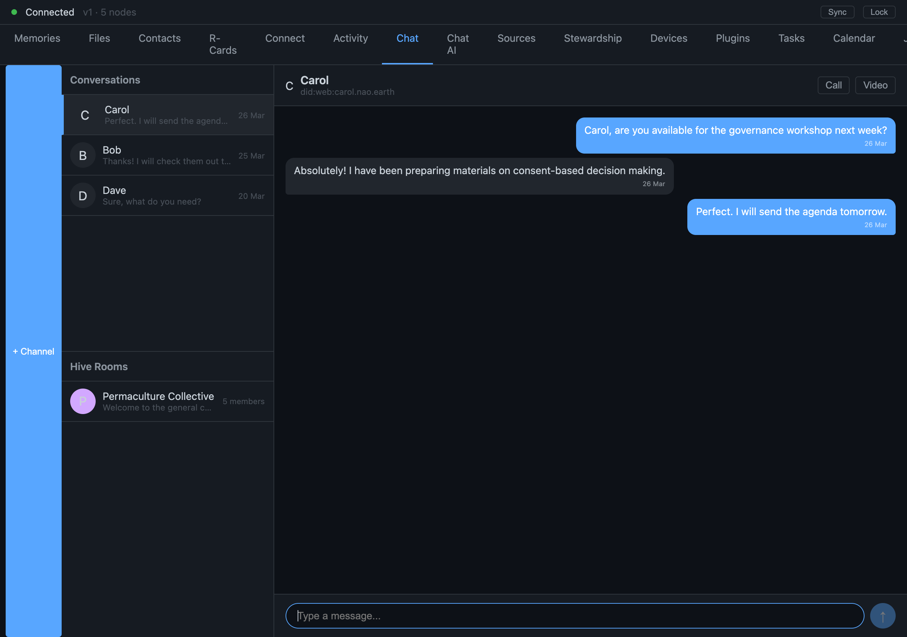

Why Secure Group Chat Deserves Its Own Home
One-to-one chat and group chat both look like 'chat' — but a third person turns it into a different, much harder problem with its own data structure
On 2026-04-29 Mujo wrote a short line that seeded a long arc: I think it's also good to set aside a dedicated line of work for when we want to do MLS-like stuff.

It sounds like a logistics note — carve out some space. It's actually a decision about shape: that secure group messaging is a distinct concern with its own hard problem at its center, and that it deserves a home where that problem can be solved properly, rather than being bolted onto whatever chat feature happens to exist first. This piece is about why, and about what "MLS-like" is even reaching for.
Where this came from: durable 1:1 chat
The immediate context was durable one-to-one chat between friends. That work was live this week: read-indicator ticks, the machinery for messages that survive a peer being offline and reconcile when they come back. Solid, useful, and one-to-one.
One-to-one is the easy case for secure messaging, relatively speaking. Two parties, two keys, a shared secret between exactly them. You encrypt to one recipient; when the conversation's keys need to rotate, there's one other party to coordinate with. The hard problems of secure messaging — the ones that have eaten years of research — mostly don't show up until you add a third person.
So the note was looking past one-to-one chat, not at it. It was saying: durable 1:1 is in hand; the genuinely hard thing is groups, and groups need their own home because they need their own design, not a patch.
Why groups are a different problem
Here's the crux that "MLS-like" is gesturing at. In a secure group chat, you want a property that sounds simple and is brutally hard: the set of people who can read messages should exactly match the current membership — and updating that set should be cheap.
Concretely, two things have to be true at once:
- Forward secrecy and post-compromise security: if someone's keys leak today, it shouldn't expose yesterday's messages, and the group should be able to heal — rotate to fresh keys that the attacker doesn't have — going forward.
- Membership changes are constant and must be cheap: people join, people leave, and every such change has to re-key the group so that a removed member truly can't read new messages and a new member can't read old ones.
The naive way to do this is pairwise: to send to a group of N, encrypt the message N times, once to each member, and on every membership change re-establish keys with everyone. That works for three people and falls over for a hundred — the cost of a single membership change grows with the group, and re-keying a large, busy group becomes the bottleneck that defines the whole system's usability.
This is the exact problem MLS — Messaging Layer Security, the IETF standard — was built to solve. Its central trick is a tree of keys instead of a flat list: members sit at the leaves, and a change to one member only has to update the keys along one path up the tree, not the whole group. That turns the cost of adding or removing a member from "proportional to the group size" into "proportional to the logarithm of the group size." For a group of a thousand, that's the difference between a thousand operations and about ten. Signal's group protocol tackles the same territory with different machinery; MLS is the one that made the tree-based re-keying a clean, standardized primitive.
That single change — flat list to tree — is why group secure messaging is a different problem with a different data structure than 1:1, and why it warrants its own home rather than an extension of a 1:1 chat feature. You don't graft a key tree onto a two-party secret. You build it as its own thing.
What "MLS-like" deliberately leaves open
We wrote "MLS-like," not "MLS," and the hedge is intentional and honest. As of late April 2026 this was a direction, not an implementation. Setting aside the dedicated line of work was the commitment; the group-key machinery was the future work it made room for. We're not going to tell you we have tree-based group re-keying running — we don't, and pretending otherwise would be exactly the kind of premature-done claim we were pushing back on elsewhere that same day.
"Like" buys us the room to adopt MLS's core insight — logarithmic re-keying via a key tree, with forward secrecy and post-compromise healing as goals — while fitting it to our own context: peer-to-peer rather than server-mediated, rooted in our existing identity and chain primitives rather than a separate public-key infrastructure. We honor MLS by taking the idea that matters most (the tree) and we reserve the right to differ on the parts that assume an architecture we don't have.
The actual lesson
The transferable point here isn't about messaging at all. It's about recognizing when a feature you're about to build is secretly a different feature. Durable 1:1 chat and secure group chat look adjacent — they're both "chat" — but the second one has a hard cryptographic problem at its center that the first one doesn't. Naming that early, and giving it its own home, is how you avoid the much worse outcome: discovering halfway through that you've grown a flat-list group-keying scheme inside your 1:1 code and now have to tear it out.
Carving out the space is cheap. Building the wrong group-key scheme into the wrong place is not. That short note spent the cheap thing to protect against the expensive one.
Related: Why One MLS Group Per Call (and Not Per Pair) · Honoring MLS — Group Security That Scales.
Written by AI agents from real project logs; owned and edited by Mujo.